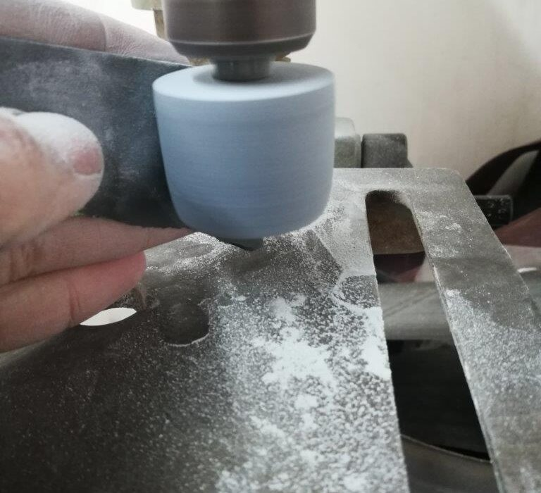

When I built my turntable originally, I used three Dayton Audio gold speaker spikes, in a triangular configuration. Why three and not four? Even though the spikes are adjustable, which was one of my requirements for legs for this turntable, trying to perfectly adjust and level a turntable with four legs is nearly impossible, especially when they have no cushioning. You can find numerous mathematical treatises on the subject, talking about how three points define a plane, and so on, but basically, something with three legs can’t wobble. You’ll surely have noticed this with stools or chairs on slightly uneven surfaces – only three legs at a time touch the ground perfectly. (Frank Lloyd Wright’s Fallingwater makes use of three-legged chairs to compensate for the uneven stone floor.) Felt or rubber pads on furniture don’t just prevent scuffing, they also compress somewhat to conform to the surface and reduce the wobbling. So in short, if I was going to use these hard, unyielding, spikes, I would use three, not four, to support my turntable.
While the speaker spikes were very well made, and attractive, I quickly became irritated that I needed assistance to move my turntable. The 40+ lb. turntable, supported on such tiny points, would dig into any furniture surface upon which I set it. The spikes came with dimpled, foam-backed metal pads, to protect furniture, but trying to line them up under the turntable while manhandling such a beast into place was more than a little frustrating. I wanted something to lift the turntable off of the surface enough that picking it up would be easier, so short rubber or felt pads wouldn’t do. I finally resorted to making my own legs.
Looking around the shop for materials, I landed again on the soapstone which I used to make my record weight. I’ve used this material before to make legs for things, and it is as easy to work as wood, polishes beautifully, practically inert to any form of chemical attack, moisture, rot, etc. And since most of this turntable is bespoke of high-quality materials at this point, why not?
Using a hole saw chucked into my poorly-abused drill press, I cut out three plugs of soapstone. I wanted to be able to screw the legs into the threaded inserts which came with the spikes, rather than remove those from the plywood base, so I needed threaded rod. As it turned out, the spikes used an M6 thread, so I ordered some M6 stainless steel threaded rod to epoxy into the centers of the soapstone plugs. Drilling holes into a scrap of wood, to maintain a perpendicular orientation, I drove the threaded rods in, then used J-B Weld (a very close match for the grey of un-oiled soapstone), to glue the soapstone onto the rod. After trimming the excess threaded rod, I chucked them into the drill press and abused the bearing some more by using it as a lathe.
The advantage of the spikes is that a hard, uncushioned leg couples the turntable to the surface below it, and the cone shape actually channels vibrations down into the higher-mass furniture, effectively damping rumble. Sounds like bullshit, doesn’t it? Let’s try the other side: You should always use a soft, dense material like sorbothane to both isolate your turntable from vibrations due to footfalls and speakers, but also turn the kinetic energy into heat by the virtues of the material itself.
*cough*bullshit*cough*
There is no end of opinions on the internet which seem to be based in SCIENCE! regarding what you should put under your turntable. And often the very scientific ideas are 180 degrees opposed to each other. I decided to stick with something I knew to be beneficial: stability.
In the name of utility, I wanted some give to these soapstone legs I was making, which meant putting rubber or felt or similar on the bottom, both to protect the furniture beneath it, and to cushion enough to make up for surface irregularity (though a three-legged arrangement already compensates for that). I had a sheet of 1/4″ cork in the workshop.
After using J-B Weld to epoxy the cork to the bottom of the legs, I again turned them in the drill- press to sand the cork flush. Next problem: when you screw a very unyielding material onto another, it is often difficult to ensure a tight fit. Steel bolts/screws actually stretch and compress more than you’d think, but soapstone would just crumble or crack. So I cut felt washers (using what was handy) to compress between the turntable base and the legs. A .357 magnum casing, sharpened with a carbide deburring tool, was a good size for punching the holes.
The end result is something I’m happy with: I no longer have to have assistance to set my turntable in place, there is enough room to get my fingers underneath to pick it up, and one more piece of my custom turntable is 100% original.
Tags: soapstone, Turntable